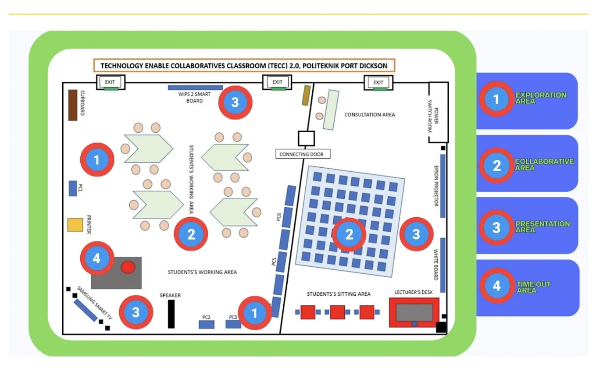
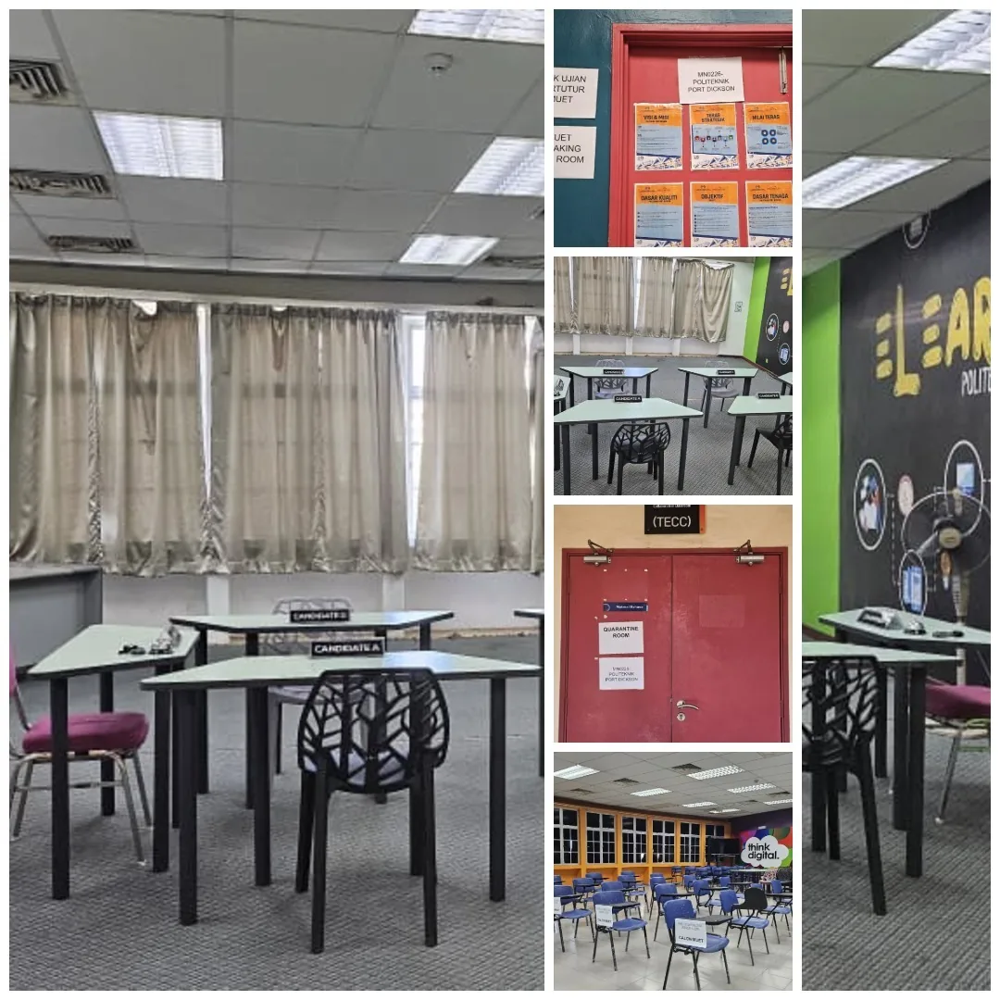

Tatacara / SOP
Rujukan garis panduan TECC 2.0 tersedia. Status SOP semasa dan versi berkuat kuasa perlu disahkan.
TECC 2.0 memfokuskan PdP berjadual, kolaborasi pelajar dan aktiviti akademik serta ko-kurikulum.

Profil ruang, fasiliti dan tujuan.
Sumber: jadual waktu dan e-Booking JPA. Lihat Bukti & Lampiran ↗
TECC 2.0 menggabungkan pembelajaran aktif, Education 3.0 dan pemikiran aras tinggi. Pensyarah bertindak sebagai fasilitator; pelajar bekerjasama dalam kumpulan.
Rujukan: Garis Panduan BIPD 2024, Bab 1 dan 3.
Rekod jadual Sesi Disember 2017
Rujukan ↗Kursus pengurusan TECC, 19–20 Disember
Rujukan ↗Naik taraf projektor dilaporkan penyelaras. Jadual tender PEA 1/2 POLIPD: 7 Oktober 2022; pemasangan dan spesifikasi belum disahkan.
Rujukan ↗Arkib pelaporan Canva
Rujukan ↗Arkib pelaporan Google Sites
Rujukan ↗Pelaporan bersepadu
Rujukan ↗Objektif garis panduan BIPD 2024; bukan tuntutan hasil yang telah dicapai.
Susun atur untuk perbincangan berkumpulan.
Foto fasiliti · E78Komputer dan meja kerja di sisi ruang.
Foto fasiliti · E78Meja berkumpulan dan sudut Think Digital.
Foto fasiliti · E78Foto kemudahan; tarikh dan ID bukti belum dipadankan. Bukan bukti kehadiran.
Empat foto kemudahan dipadankan dengan E78. Padanan visual diperiksa. Tarikh rakaman dan pautan asal belum dikenal pasti; tiada jam penggunaan dikira.

Pengurusan ruang, SOP dan penyelenggaraan.
Rujukan garis panduan TECC 2.0 tersedia. Status SOP semasa dan versi berkuat kuasa perlu disahkan.
Jabatan Pengajian Am / penyelaras TECC — nama pegawai semasa perlu disahkan.
Rekod pemeriksaan, aduan peralatan dan tindakan penyelenggaraan perlu dilampirkan.
TECC 2.0 Guideline Final ↗
Panduan operasi dan modul pendidik: lihat lampiran ↗
Angka dan carta utama pada satu paparan.
Jadual, rekod aktiviti dan garis masa 2026.
TECC 2.0 menggunakan dua kaedah: PdP berjadual dan penggunaan berkala di luar jadual. Hanya tempoh yang tidak bertindih boleh dijumlahkan sebagai jam penggunaan tambahan.
| Tarikh | Nama aktiviti | Jam | Ringkasan / status | Bukti |
|---|
| Bulan | PdP berjadual | Tempahan tambahan | Aktiviti | Bukti Drive |
|---|


Rujukan bukti penuh: Google Sites TECC. Lihat Bukti & Lampiran ↗

Dapatan utama dan kesediaan bukti mengikut rubrik bintang.
Pencapaian, inovasi dan saluran penyebarluasan.
Nyatakan saluran penyebarluasan yang digunakan untuk berkongsi aktiviti sebenar, disertakan bukti pautan atau tangkap layar rasmi.
Pautan artikel aktiviti perlu diisi selepas disahkan.
Pautan siaran rasmi perlu diisi selepas disahkan.
Rekod komunikasi dalaman perlu dipilih mengikut kesesuaian.
Laporan 2025 dikekalkan di sini. Tambah bahagian 2026 mengikut arahan penyelaras.
Tindakan untuk melengkapkan laporan dan meningkatkan ruang.
Surat, dokumen dan bukti sokongan.